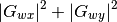
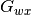
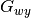
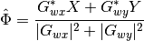

FourierTransformReconstructor¶
-
class
FTR.ftr.FourierTransformReconstructor(ap, filter=None, manage_tt=None, suppress_tt=False)[source]¶ Bases:
FTR.base.ReconstructorA reconstructor which uses the fourier transform to turn slopes into an estiate of the wavefront phase.
Parameters: ap: array_like
The aperture of valid measurement points, which also defines the reconstructor shape used to generate filters.
filter: string_like, optional
manage_tt: bool, optional
Remove tip and tilt from slopes before reconstruction, and re-apply them after reconstruction. (default is to use
suppress_tt)suppress_tt: bool, optional
Remove tip and tilt from slopes, and don’t re-apply after reconstruction. (default is False)
Notes
The Fourier Transform Reconstructor implements the reconstruction scheme described in chapter 2 of Lisa Poyneer’s dissertation. [R3] The implementation of the Fourier Transform Reconstructor depends on a pair of spatial filters (x and y) which relate the specific geometry of the wavefront sensor to the phase estimation points. Common spatial filters are the “modified Hudgins” filter,
mod_hud, and the Fried geometryfried. Additional named filters can be registered with this class usingregister(), or an entirely custom filter can be used by modifying thegxandgyattributes.References
[R3] (1, 2) Poyneer, L. A. Signal processing for high-precision wavefront control in adaptive optics. (Thesis (Ph.D.) - University of California, 2007). Examples
Creating a generic reconstructor will result in an uninitialized filter:
>>> import numpy as np >>> aperture = np.ones((10,10)) >>> recon = FourierTransformReconstructor(aperture) >>> recon <FourierTransformReconstructor (10x10) filter='Unknown'>
You can create a reconstructor with a named filter:
>>> import numpy as np >>> aperture = np.ones((10,10)) >>> recon = FourierTransformReconstructor(aperture, "fried") >>> recon <FourierTransformReconstructor (10x10) filter='fried'> >>> ys, xs = np.meshgrid(np.arange(10), np.arange(10)) >>> recon(xs, ys) array([...])
Attributes Summary
apThe aperture, a boolean numpy array. denominatorFilter denominator filterThe filter components, as a FTRFiltertuple.gxThe x spatial filter. gyThe y filter. nameFilter name shapeShape of the reconstructed grid. tt_modeTip/tilt management mode. Methods Summary
apply_filter(xs_ft, ys_ft)Apply the filter to the FFT’d values. filters()Return the list of registered filter names. get(filter, shape)Get a filter tuple by name from the filter registry. reconstruct(xs, ys[, manage_tt, suppress_tt])Use the Fourier transform and spatial filters to reconstruct an estimate of the phase. register(name[, filter])Register a filter generating function. use(filter)Use a particular spatial filter for reconstruction. Attributes Documentation
-
ap¶ The aperture, a boolean numpy array.
The aperture is used to compute tip and tilt removal from the Fourier Transform Reconstructor.
-
denominator¶ Filter denominator
This term normalizes for the magnitude of the individual spatial filters. It is recomputed whenever the filters change, but it is otherwise computed only once for each set of filters.
The equation used is

-
gx¶ The x spatial filter.
 in the equation implemented in
apply_filter().
-
gy¶ The y filter.
 in the equation implemented in
apply_filter().
-
name¶ Filter name
-
shape¶ Shape of the reconstructed grid.
-
tt_mode¶ Tip/tilt management mode.
Returns a string representation of the tip/tilt management mode, useful for the representation of this object.
Methods Documentation
-
apply_filter(xs_ft, ys_ft)[source]¶ Apply the filter to the FFT’d values.
Parameters: xs_ft : array_like
The fourier transform of the x slopes
ys_ft : array_like
The fourier transform of the y slopes
Returns: est_ft : array_like
The fourier transform of the phase estimate.
Notes
This implements the equation

-
classmethod
get(filter, shape)[source]¶ Get a filter tuple by name from the filter registry.
Parameters: filter : str
The filter name, as it was registered with
register()shape : tuple of ints
The shape of the desired filter.
Returns: gx : array_like
The x spatial filter
gy : array_like
The y spatial filter
name : str
The filter name
-
reconstruct(xs, ys, manage_tt=False, suppress_tt=False)[source]¶ Use the Fourier transform and spatial filters to reconstruct an estimate of the phase.
Instead of using this method directly, call the instnace itself to ensure that settings are correctly obeyed.
Parameters: xs : array_like
The x slopes
ys : array_like
The y slopes
manage_tt : bool
Whether to remove the tip/tilt from the slopes before reconstruction
suppress_tt : bool
If set, do not re-apply the tip tilt after reconstruction.
Returns: estimate : array_like
An estimate of the phase across all the points where x and y slopes were measured.
Notes
This method serves as the implementation for
__call__().
-
classmethod
register(name, filter=None)[source]¶ Register a filter generating function.
This classmethod can be used as a decorator.
Parameters: name : str
The name of the filter to register
filter : callable
A callable which will return an
FTRFilter-compatible tuple when provided with the desired shape of the filter.Notes
To use this method as a decorator, simply provide the filter name:
@FourierTransformReconstructor.register("myfilter") def my_filter_function(shape): ... return FTRFilter(gx, gy, "myfilter")
-
use(filter)[source]¶ Use a particular spatial filter for reconstruction.
Parameters: filter : str
The filter name, as it was registered with
register()Examples
You can create a reconstructor with one filter:
>>> import numpy as np >>> aperture = np.ones((10,10)) >>> recon = FourierTransformReconstructor(aperture, "fried") >>> recon <FourierTransformReconstructor (10x10) filter='fried'> >>> recon.use("mod_hud") >>> recon <FourierTransformReconstructor (10x10) filter='mod_hud'>
-